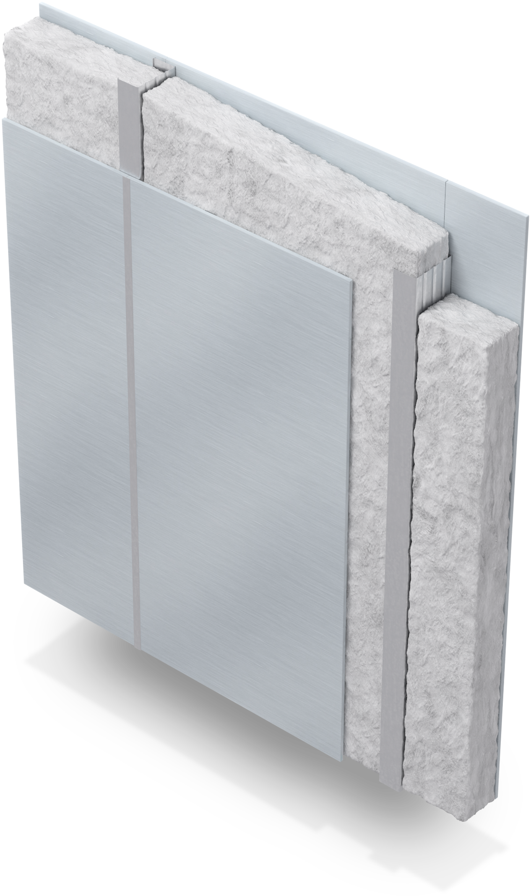
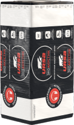

- Класс звукопоглощения - «А»
- Высший уровень экологичности
- Идеален для детских комнат и спален
Ключевые преимущества

Класс звукопоглощения — «А»
-
Высший уровень экологичности
-
Идеален для детских и спален
-
Соответствует современным нормативам
-
Удобен в применении
-
Защита от влаги WaterGuard
Защитите себя и близких от надоедливого шума
Материал URSA ЭКОАКУСТИК способен значительно снизить шум от соседей, громко работающего телевизора или проезжающих за окном машин
Звукоизоляция
при 10 см - до 58 дБ*
-
Крики соседей
45 - 60 дБ -
Шум городского транспорта
65 - 90 дБ -
Громкая музыка
95 - 110 дБ
* Межкомнатная перегородка 150 мм со звукоизоляцией URSA ЭКОАКУСТИК толщиной 100 мм и обшивкой из двух листов гипсокартона с каждой стороны обеспечит уровень защиты от шума 58 дБ. То есть громкий разговор нескольких людей в соседней комнате будет практически не слышен.
Где применять?
-
Перегородки
Качественная звукоизоляция внутренних помещений позволяет разделять пространства различного назначения – рабочую зону эффективно изолировать от спальни, комнату переговоров отделить от библиотеки, разделить производственное и офисное помещения. Эффективно решить вопрос звукоизоляции внутренних помещений можно с помощью устройства легких каркасных перегородок.
Для того чтобы сделать перегородки максимально звуконепроницаемыми, рекомендуем увеличить слой звукоизоляции внутри перегородки как минимум до 100 мм, а количество листов гипсократона, которым будет обшит каркас с обеих сторон, – до двух с каждой стороны.
Использование каркасных перегородок с материалом URSA ЭКОАКУСТИК позволяет эффективно снизить уровень шума, проникающего в комнату и при этом максимально сохранить ее полезное пространство. Перегородка толщиной всего 75 мм снижает уровень шума на 46 дБ, так что громкий разговор за стенкой станет практически не слышен. Если необходима максимальная звукоизоляция, то при толщине перегородки 150 мм изоляция шума составит 58 дБ, что примерно соответствует звуку работающего телевизора.
-
Акустические потолки

В квартире и в частном доме важно позаботиться о звукоизоляции межэтажного перекрытия. Для того чтобы защититься от громкого разговора или звуков работающего телевизора, которые проникают из верхнего этажа, достаточно использовать акустический потолок на подвесах или на каркасе.
При устройстве акустического потолка по каркасу можно использовать узкие потолочные профили высотой 27 мм, что позволит сохранить внутренний объем помещения. Изоляционный материал в такой конструкции укладывается между профилями и закрывается листом гипсокартона. Для достижения большего эффекта внутреннее пространство профиля также рекомендуется заполнить звукоизоляционным материалом.
-
Облицовки стен изнутри

При недостаточной толщине межквартирных или наружных стен в жилую комнату могут проникать посторонние звуки как со стороны соседей так и со стороны шумной улицы. В этом случае рекомендуется использовать звукоизоляционные облицовки з заполнением звукопоглощающим материалом.
Для достижения лучшего эффекта при монтаже каркасной облицовки рекомендуем избежать крепления каркаса к изолируемой стене. Стойки каркаса лучше крепить только в пол и в потолок. Верхний и нижний направляющие профили рекомендуем дополнительно изолировать самоклеящейся полиуретановой лентой.
Применение облицовки с заполнением изоляцией позволяет снизить уровень шума проходящего через стену на 17 дБ.
-
Полы и перекрытия

Изоляция перекрытий имеет особое значение в частном деревянном или каркасном доме, т.к. позволяет надежно отделить приватную зону спальных помещений (на втором этаже) от более шумных зон гостиной и кухни, которые чаще располагают на первом этаже.
При изоляции деревянного межэтажного перекрытия по балкам рекомендуем перед укладкой изоляционного материала положить на черновой пол слой пароизоляции. Наличие пароизоляции снизу позволит избежать конденсата в том случае, если зимой будет использоваться и отапливаться только первый этаж.
Изоляция перекрытий по балкам позволяет эффективно снизить воздушный шум: звук телевизора, музыку, громкие разговоры. Для защиты от ударного шума (топот, вибрация) рекомендуем использовать дополнительные материалы, которые позволяют гасить вибрацию, например, систему «плавающий пол».
-
Каркасные стены

Изоляционный материал в конструкции скатной крыши выполняет тройное назначение: защищает от потерь тепла зимой, от перегрева летом и от проникновения уличного шума - круглый год. Защита от шума в крышах особенно актуальна при использовании кровли из металлочерепицы или профлиста.
При изоляции скатной крыши нужно уделить особое внимание правильному составу конструкции и не забыть про такие слои как пароизоляция, вентзазор и гидроизоляция. Для компенсации потерь тепла и проникновения шума через стропила рекомендуется по низу стропил устраивать еще один слой изоляции толщиной 50 мм расположенный перпендикулярно стропилам.
Изоляция скатной крыши позволяет сократить общие потери тепла дома в среднем на 25%, а также повысить общий акустический комфорт, создав по-настоящему приватную и спокойную зону, что особенно важно для тихих спальных помещений.
-
Крыши

Изоляционный материал в конструкции скатной крыши выполняет тройное назначение: защищает от потерь тепла зимой, от перегрева летом и от проникновения уличного шума - круглый год. Защита от шума в крышах особенно актуальна при использовании кровли из металлочерепицы или профлиста.
При изоляции скатной крыши нужно уделить особое внимание правильному составу конструкции и не забыть про такие слои как пароизоляция, вентзазор и гидроизоляция. Для компенсации потерь тепла и проникновения шума через стропила рекомендуется по низу стропил устраивать еще один слой изоляции толщиной 50 мм расположенный перпендикулярно стропилам.
Изоляция скатной крыши позволяет сократить общие потери тепла дома в среднем на 25%, а также повысить общий акустический комфорт, создав по-настоящему приватную и спокойную зону, что особенно важно для тихих спальных помещений.
Качественная звукоизоляция внутренних помещений позволяет разделять пространства различного назначения – рабочую зону эффективно изолировать от спальни, комнату переговоров отделить от библиотеки, разделить производственное и офисное помещения. Эффективно решить вопрос звукоизоляции внутренних помещений можно с помощью устройства легких каркасных перегородок.
Для того чтобы сделать перегородки максимально звуконепроницаемыми, рекомендуем увеличить слой звукоизоляции внутри перегородки как минимум до 100 мм, а количество листов гипсократона, которым будет обшит каркас с обеих сторон, – до двух с каждой стороны.
Использование каркасных перегородок с материалом URSA ЭКОАКУСТИК позволяет эффективно снизить уровень шума, проникающего в комнату и при этом максимально сохранить ее полезное пространство. Перегородка толщиной всего 75 мм снижает уровень шума на 46 дБ, так что громкий разговор за стенкой станет практически не слышен. Если необходима максимальная звукоизоляция, то при толщине перегородки 150 мм изоляция шума составит 58 дБ, что примерно соответствует звуку работающего телевизора.
В квартире и в частном доме важно позаботиться о звукоизоляции межэтажного перекрытия. Для того чтобы защититься от громкого разговора или звуков работающего телевизора, которые проникают из верхнего этажа, достаточно использовать акустический потолок на подвесах или на каркасе.
При устройстве акустического потолка по каркасу можно использовать узкие потолочные профили высотой 27 мм, что позволит сохранить внутренний объем помещения. Изоляционный материал в такой конструкции укладывается между профилями и закрывается листом гипсокартона. Для достижения большего эффекта внутреннее пространство профиля также рекомендуется заполнить звукоизоляционным материалом.
Применение акустического потолка по каркасу позволит снизить шум от голосов или музыки, доносящихся с верхнего этажа от 8 до 13 дБ в зависимости от толщины изоляционного материала и количества обшивочных листов.
При недостаточной толщине межквартирных или наружных стен в жилую комнату могут проникать посторонние звуки как со стороны соседей так и со стороны шумной улицы. В этом случае рекомендуется использовать звукоизоляционные облицовки з заполнением звукопоглощающим материалом.
Для достижения лучшего эффекта при монтаже каркасной облицовки рекомендуем избежать крепления каркаса к изолируемой стене. Стойки каркаса лучше крепить только в пол и в потолок. Верхний и нижний направляющие профили рекомендуем дополнительно изолировать самоклеящейся полиуретановой лентой.
Применение облицовки с заполнением изоляцией позволяет снизить уровень шума проходящего через стену на 17 дБ
Изоляция перекрытий имеет особое значение в частном деревянном или каркасном доме, т.к. позволяет надежно отделить приватную зону спальных помещений (на втором этаже) от более шумных зон гостиной и кухни, которые чаще располагают на первом этаже.
При изоляции деревянного межэтажного перекрытия по балкам рекомендуем перед укладкой изоляционного материала положить на черновой пол слой пароизоляции. Наличие пароизоляции снизу позволит избежать конденсата в том случае, если зимой будет использоваться и отапливаться только первый этаж.
Изоляция перекрытий по балкам позволяет эффективно снизить воздушный шум: звук телевизора, музыку, громкие разговоры. Для защиты от ударного шума (топот, вибрация) рекомендуем использовать дополнительные материалы, которые позволяют гасить вибрацию, например, систему «плавающий пол».
В каркасных конструкциях минеральная изоляция - основной компонент, который превращает соединение из каркаса и обшивки в настоящий барьер, предотвращающий потерю тепла и защищающий от уличного шума.
Каркасные стойки в стене являются по сути мостиками, через которые могут происходить потери тепла и проникновение уличного шума. Для того чтобы компенсировать влияние стоек каркаса и повысить однородность изоляции рекомендуем использовать дополнительный изоляционный слой, устанавливаемый горизонтально, поперек основных стоек стены.
Каркасная стена с заполнением звукоизоляционным материалом толщиной 150 мм и обшивками из OSB позволяет снизить уровень проникающего шума на 49 дБ.
Изоляционный материал в конструкции скатной крыши выполняет тройное назначение: защищает от потерь тепла зимой, от перегрева летом и от проникновения уличного шума - круглый год. Защита от шума в крышах особенно актуальна при использовании кровли из металлочерепицы или профлиста.
При изоляции скатной крыши нужно уделить особое внимание правильному составу конструкции и не забыть про такие слои как пароизоляция, вентзазор и гидроизоляция. Для компенсации потерь тепла и проникновения шума через стропила рекомендуется по низу стропил устраивать еще один слой изоляции толщиной 50 мм расположенный перпендикулярно стропилам.
Изоляция скатной крыши позволяет сократить общие потери тепла дома в среднем на 25%, а также повысить общий акустический комфорт, создав по-настоящему приватную и спокойную зону, что особенно важно для тихих спальных помещений.
Характеристики
| Наименование | Размеры, мм | В упаковке | На паллете | Индекс звукопоглощения, 50 мм | |||||||||
| URSA |
|
|
|
|
|||||||||
| URSA ЭКОАКУСТИК |
|
|
|
|
Высший уровень экологичности
ИДЕАЛЬНЫЙ выбор для тех, предъявляет высочайшие требования к строительным материалам.
PUREONE — уникальная технология с применением связующего на основе акрилового полимера. Полимер разбавляется водой, при полимеризации выделяется водяной пар. Материал характеризуется особой эластичностью и упругостью, удивительной легкостью, низкой теплопроводностью, экологичностью и гигиеничностью.
-
Рекомендован Научным центром РАМН для использования при строительстве и реконструкции дошкольных общеобразовательных учреждений, школ и лечебно- профилактических учреждений.
-
Экспертное заключение ФГБУЗ «Головной центр гигиены и эпидемологии» — Рекомендован для использования в зданиях и сооружениях всех типов (А, Б, В).
-
Соответствует высшему уровню требований экологического стандарта маркировки строительных и отделочных материалов EcoMaterial Absolute
Сертификаты продукции URSA
Сертифицированные материалы URSA ЭКОАКУСТИК отвечают самым строгим российским и европейским нормам
Вопрос техспециалисту URSA?
Сергей Розенко